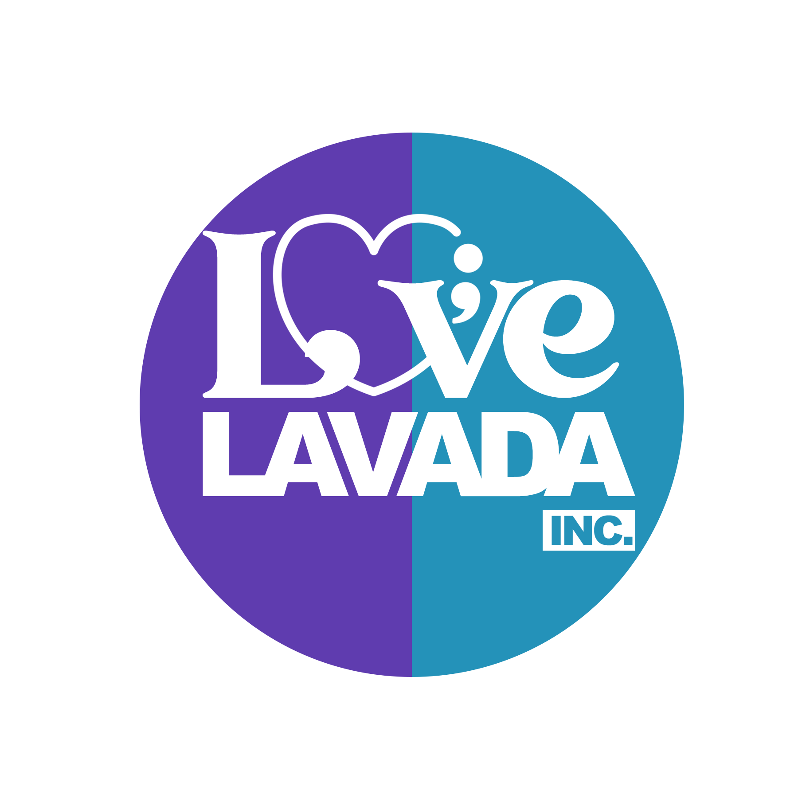

Awareness
Community conversations that make mental health easier to understand and talk about.

Love LaVada, IncDonateMental health support rooted in community
Love LaVada, Inc brings mental health awareness, suicide prevention education, and compassionate support to Black communities across North Carolina.
Our purpose
Love LaVada develops mental health awareness initiatives, community outreach events, and educational resources for Black families and youth. Based in High Point, our programs focus on healing, wellness, suicide prevention, and connecting communities across North Carolina with meaningful support.
Learn more about Love LaVadaHow we show up
Community conversations that make mental health easier to understand and talk about.
Resources for families and youth focused on wellness, prevention, and informed support.
Clear pathways to local and national help when individuals and families need it.
Help guide our work
Our anonymous community survey helps us understand real needs and build programs that respond with care.
Take the anonymous survey